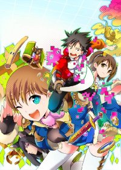

好きな本の紹介とか
この世界がゲームだと俺だけが知っている(2014/01/21)
～バグというもの～
一般的なプログラムにおいてバグというものは決して良いものではありません。
たくさんの人がビジネスや生活で利用しているコンピュータにバグ(不具合)が生じた場合、膨大な被害が発生する場合があります。
銀行や航空券の管理システムのサーバが停止した場合は、通常の業務が機能しなくなり多額の損害が発生します。
交通機関は医療機器に障害が生じた場合は、命に関わる事にもなります。
なので、このようなプログラムは多数の人員と長時間に渡る検証を行って不具合が出ないように厳重に管理されます。
しかし、ゲームプログラムにおいては違います。
ゲームというものはいかに面白いかという点が重要になります。
よってバグであっても結果、ゲーム面白くなればそれはゲームの味にさえなります。
ゲームプログラムの不具合によって生じる被害というものは、引きこもってゲームばかりしてる少年がコントローラを叩きつける程度のものでしかないため、多少の不具合が生じてもそれほど大きな被害にはなりません。
また、ゲームプログラムにおけるバグというものは制作側が認知しているものがほとんどであり、納期の都合により、ゲームの進行に大きく影響が与えないことがわかっている場合は、バグを直さずに発売される場合もあります。
この小説は、ゲームのバグをテーマにした内容であり、様々なバグのケースが面白おかしく散りばめられています。
～ゲームの世界に閉じ込められてしまう主人公～

この物語は、ゲームをプレイしすぎてゲームのバグを含む仕様を知り尽くした少年が、そのゲームに閉じ込められるという、最近流行りの設定の内容となっております。
ゲームと同じ内容であるが現実でもある、敵にやられてゲームオーバーになってしまうと、自分は二度と蘇ることができない。そういった世界での話になります。
そして、そのゲームは最も理不尽で、バグが多く、少しの選択を誤ると簡単にゲームーオーバになってしまうようなゲーム。
しかし、主人公は隅から隅までこのゲームを知り尽くしています。
主人公の少年は無事にゲームをクリアし元の世界に戻れるのか？
と言った内容です。
～作者がゲーマーであるからこそ生まれた豊富なバグのネタ～
架空のゲームをテーマにした小説は、たくさんあります。
最近アニメ化された「ソード・アート・オンライン」は、オンラインゲームの世界に閉じ込められる。ほとんど似たような設定ですが、この「この世界がゲームだと俺だけが知っている」とは根本的に話の面白さが違います。
「ソード・アート・オンライン」は、架空ののオンラインゲームをテーマにしていますが、オンラインゲームに関するネタが多く、オンラインゲームを知っている人はもちろん、知らない人は、オンラインゲームがどのようなものかを感じることができるので、お勧めの一本です。
この「この世界がゲームだと俺だけが知っている。」はバグに焦点があたっていおり、ゲームに詳しい人なら「このバグあのゲームにもあったな」とか。
ゲームを知らない人だったら、「え～そんなことってあるんだ！？」なんて感心しながら笑わせてくれることでしょう。ゲームの世界観がＲＰＧなので、そういう世界観が好きな方にもおすすめです。
作者が過度なゲーマーであり、作品のバグについてのネタが豊富で、嘘のようで本当にあったバグな元ネタだったりもします。
ゲームの面白さはバグを含めた面白さとも言えます。
バグがあったから人気があったゲームも少なからず存在します。
ゲーム好きなら、バグをテーマにした、珍しいライトノベル。
１度は読んでみては、いかがでしょう？

迫りくるバグ! 襲いくる理不尽! そして、それを覆す圧倒的台無し策! ! "ぼっち"ゲーマーの相良操麻(さがら・そうま)はある日、悪名高いバグ多発ゲームの世界に入り込んでしまう。 「理不尽」と「運営の悪意」を具現化したような通称<猫耳猫>の世界でバグ仕様を逆手にとったソーマの冒険がはじまる!

クリアするまで脱出不可能、ゲームオーバーは本当の“死”を意味する―。謎の次世代MMO『ソードアート・オンライン(SAO)』の“真実”を知らずにログインした約一万人のユーザーと共に、その苛酷なデスバトルは幕を開けた。 SAOに参加した一人である主人公・キリトは、いち早くこのMMOの“真実”を受け入れる。 個人サイト上で閲覧数650万PVオーバーを記録した伝説の小説が登場。